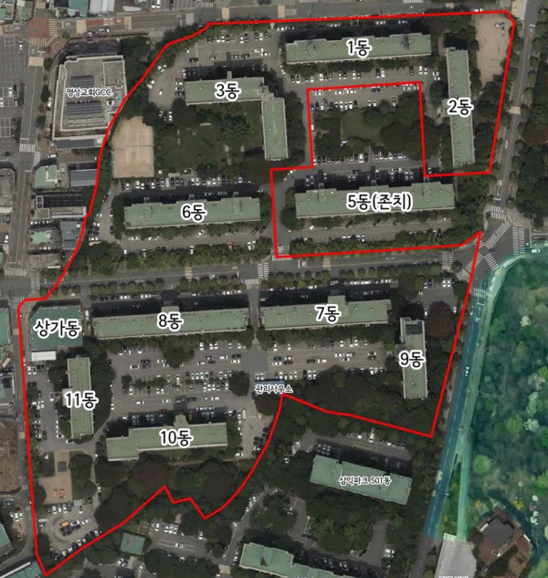

3줄요약
1.서울 강동구 삼익맨션이 대형 평형 주민들과 분담금 문제로 갈등을 빚자 단지 한가운데 있는 5동을 빼고 재건축
2.법원 판결과 조합원 90% 이상 동의를 거쳤으며 재건축 규모는 1,169가구에서 990가구로 축소되고 5동은 낡은 건물로 남음
3.예상 분담금 3억7천만~4억4천만원을 내야 하지만 사업 지연으로 비용이 더 커지는 것을 피하고자 빠른 추진
돈좀 더 받을려다가 영원히 좆댐

3줄요약
1.서울 강동구 삼익맨션이 대형 평형 주민들과 분담금 문제로 갈등을 빚자 단지 한가운데 있는 5동을 빼고 재건축
2.법원 판결과 조합원 90% 이상 동의를 거쳤으며 재건축 규모는 1,169가구에서 990가구로 축소되고 5동은 낡은 건물로 남음
3.예상 분담금 3억7천만~4억4천만원을 내야 하지만 사업 지연으로 비용이 더 커지는 것을 피하고자 빠른 추진
돈좀 더 받을려다가 영원히 좆댐
분담금이니 뭐니 24평 34평 50평 그대로갈떄 분담금 얼마얼마 이지랄하지말고
그냥 현재 실거래가 기준으로 10억 13억 15억이라가정하면
그만큼 가격을 돌려준다치고 새아파트가 13억 16억 19억이된다하면 그만큼 가치를뺴서 분담금 추가로내게끔하면
서로 안싸우는거아님 ??
이렇게해도 반대할사람이있어 ?
대지지분이 많이적니하지말고 현재 실거래가 기준으로 재산측정해주면되자나
원래 감정평가 두번하게 되어 있어 안그래도.
분담금은 그냥 정해지는게 아니라, 조합원 분양가에서 감정평가액 뺀 금액으로 계산이 되는거임.
그게 20년전만해도 그런 흐름이 맞았고 대형평수 들고있는데 재건축되면서 뭐 큰평수 사라지면 분담금 안내는 경우도 있었고
무튼 집값이 난리난 뒤로 결국 똘똘한 한채 라는 말이 나온 뒤 부터 조금 빠진 입지에 대형평수는 같은 단지 국평 혹은 그 아래 소형보다 면적당 제값 못받음
그러니 어찌보면 재건축 할 때 대지지분으로라도 제값 받으면 그거 그거대로 덜 억울한 선택이 되는건데 못그러니 싫다 그런거지 뭐
그래서 이미 새로 올라간 아파트중에도 대형평수 입장에선 에잇 씹 하는 경우 많았는데 어차피 요근래 몇년간 집값 개폭등해서 머 이런들 어쩔티비 어차피 다 이득봄 흐름인거지
이론은 그게 맞는거 같지만 윗게이들 설명대로면 재건축 준비하면서 투기꾼들이 붙어서 소형평수 가격이 대형에 비해서 많이 뻥튀기 된다고 함.
평소엔 1.5배 차이나던게 투기 붙어서 1.2배 차이로 줄어들었는데 어 너네 실거래가 그거야 라고 하면 인정하기 어려울 듯.
재건축이라는 이벤트가 없었으면 애초에 오르지 않았을 금액이기도 하겠다만은...
뻥튀기가 되든말든 가격이올랐으면 그게맞지
그 최근 실거래가 어디는 26년 최신 가격, 어디는 23년이 최신 거래 이럼.
오피나 올려야지
5동(전용 146㎡·60가구) 국평+5억 보상 or 1+1 분양권 요구
조합이 버리고 감
뭐 내 사정은 아니니 손해본사람들은 뭐 그런거고
우린 그냥 팝콘 씹으면서 구경하면되~
아예 여의도 광장 아파트처럼 대로로 나눠져 있다면 모를까
5동이 옳던 아님 나머지 동이 옳던 시시비비를 떠나서
저렇게 애매하게 갈라지게 되면 결국 피해는 양쪽이 다 보게 되어 있음.
제 3자 입장에선 참고하기 좋은 케이스 하나가 생기는거지
얼마 더 받으려고
요즘은 재건축비용늘고 초과이익 환수 때문에
재건축 이득이 안커서 오히려 재건축 취소되면 오르고
여러단지중 한 단지만 취소되면 그 단지만 오르더라
대지지분도 크고 주변단지 재건축되면
주변 환경 개선되고 꽁짜로 돈버는거..
가격 똑같이 안가는건 맞는데 80%는 따라가니까
옛날처럼 재건축=로또인 시대도 지난듯...
저거 4억이라그러는데 나중에 물가올랐다고 몇억 더달라그럼 그현금 어디서 구람
서로 상처뿐인 싸움이네 ㅋㅋ
소형은 분담금 배로 대형은 재건축 나가리
재개발을 아예 안하고 모두가 그대로 거주한다면 이득도 손해도 없는 상태이지만, 재개발을 추진하면서 미래에 내가 얻을 이득을 양보하거나 일부 포기하지 못해서 결국은 손해를 입은 경우인건가.
저기 조합원이라 상황을 잘 아는데 간략하게 10월 현재 상황은
- 현재 통합심의를 통과한 상태
- 감정평가 대기중
- 일단 5동은 재건축상 별개의 아파트임. 따라서 5동은 재건축과 관련없는 아파트라고 보면 됨
- 다만 11월 3일인가까지 31표인가 어느표 이상 합류한다면 총회에서 합류를 결정해주기로 했음(결정해주는 거지 합류한다는건 아님. 이것도 총회 찬성요건 70%인가 필요함)
- 현재 5동은 재건축추진준비위원회 결성함(도정법상 정식단체 아님)
그런데 극동도 그렇고 저기도그렇고 왜 5동만 다들 저렇게 들고 일어나는건지...
앞에 댓글들 보면
5동이 지분을 제대로 인정 못받는 갑질 당했다
5동의 1+1 , +5억? 요구
이렇게 있는데 뭐가 맞음?
나도 작년에 들어온 케이스라 잘은 모름.
갑질...지분인정은 도정법상 감정평가로 하는거라서 당연히 손해볼수밖에 없음. 따지려면 깨스통을 들고 국회로 가서 개정해달라고 해야함
다른 대형평수 재건축 보면 손해를 보더라도 함. 그게 더 이득이니까...
서로 갑질이라기보다는 이익의 다툼이고, 양쪽다 정당한 주장이 있음
현재 재건축 아파트는 관리처분에서 자신의 지분을 감정평가를 통해 정하는데,
감정평가가 거래사례비교법을 사용함(실제거래가격)
예를들어 처음에 아파트 분양 받을 땐 24평 2억4천, 32평 3억1천, 50평 4억5천 이런식으로 분양받았다치면
대지지분도 거의 분양가에 비례해서 나눠주고, 그럼 24평하고 50평하고 분양가나 대지지분이 2배정도 차이나는데
실제 분담금을 내기 위한 감정평가를 받게되면, 현재시세는 24평이 14억, 50평이 20억 이정도해서 1.5배 밖에 인정을 못받음(실제로는 더 차이 안날거임 1.2~1.3배 예상)
그래서 50평사는사람은 대지지분대로 2배를 평가받기 원하는거고, 24평인 사람은 현재시세대로 1.5배 인정하라 이러는거임(그래야 자기가 분담금이 줄어드니까)
현재 재건축 관리처분 잘 설명했네
근데 거기서 5동이 한발 더 나감 1+1분양에 5억 배상 들고옴
나머지 조합원 등골 빼먹겠다는 소리라 조합원이 등을 돌린 상태
나 어릴때 저아파트 살았음
친구 집이 6동임. 다행이야 ㅋㅋㅋㅋㅋ
둘다 손해보는 상황인데 뭐가 다행이야 ㅋㅋㅋㅋㅋ
존치되는 거보다는 낫잖아?
글쎄다 본래있던 단지 대지 지분 25%를 떼버리고 단지 모양이라도 이쁘면 모르겠는데 이대로 5동 제척하고 완공 된다? 일단 새아파트 입주는 할수 있겠네
다시 말하지만 존치되는 거보다는 낫잖아?
그건 그래
말잘한다
존치되면 진짜 쓰레기 되는거야 말이 존치지 저거 팔리지도 않는 흉물이고 집 가치가 0원 되는거나 다름없는데 결국 기어서 들어오게 되어 있음
이거 뭐 5동이 개자식들로 묘사되는데
어떤 댓글보면 대지지분이 가장 많아서 추가금 합당한 요구햇고 1+1요구안햇다 말이 많더라.
내가보기에도 5동이 욕심내다 배터진거같은데
객관적으로는 중립이다 싶음
저 동은 이제 재건축도 못하고 어쩌냐
돈을 더받으려고 하는거는 맞는데 저 한동짜리가 대형평형인데 저평가해서 재건축 추진하니깐 반대 한걸로 아는데..
"5동은 거기서 살아. 엄마는 갈거야"
5동만 ㅈㄴ 높게 올리면 어케됨?
그렇게 허가가 그렇게 안남
5동 땅만 건페,용적률 따로적용?
풀로 꽉채워도 다른 동에 일조량 걸릴라나
일단 5동 주민만으로 사업비가 가능 할 지 의문이고.. 대지가 안나올거같은뎅
5동 빼고 건물 올린다면
건축법상에 일조권 보장인가 있는거로 알고있는데
그럼 5동 라인 주변으로는 건물 높이 짓지 못하지 않아? 형들
그래서 5동 라인으로 조경 꾸민다거나 공원으로 만든다거나..
이거 5동이 대지지분이 엄청큰데 타동이 인정안해줘서 그런거라고 알고있음. 5동도 손해긴하겠지만 단독으로 가능한 입지라 걍 버티는듯